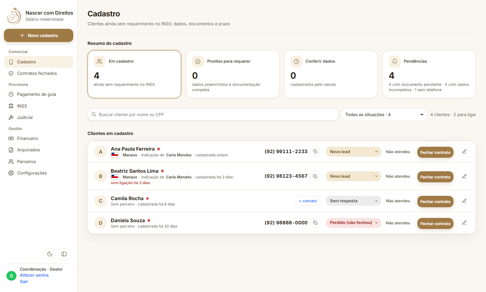
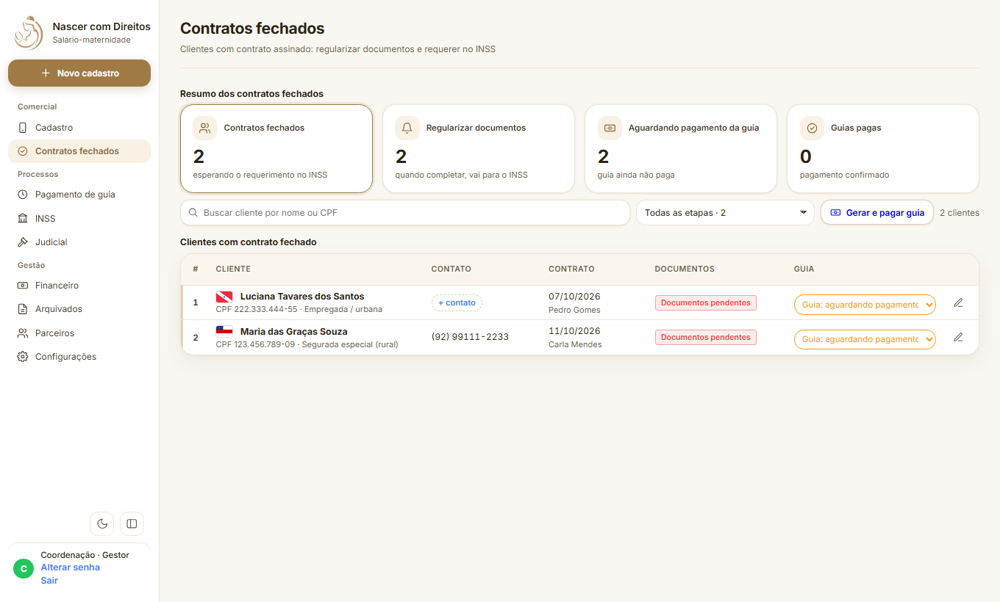
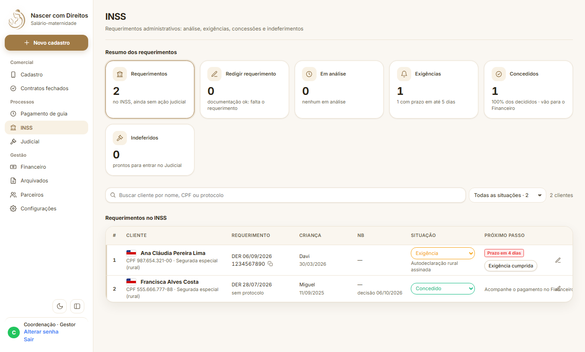
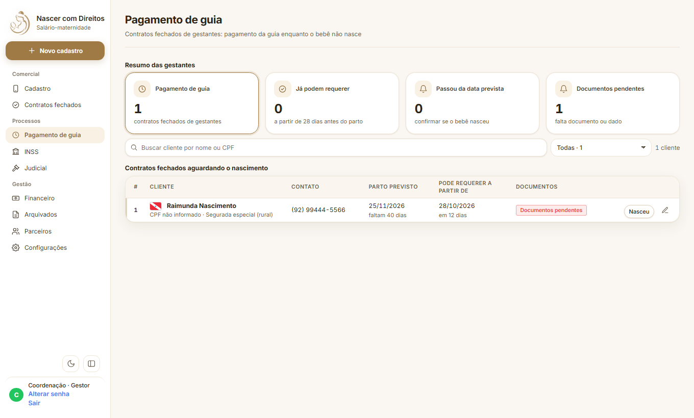
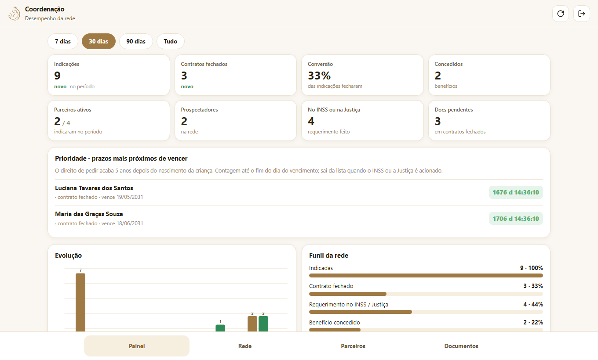

O projeto
Nascer com Direitos
Toda mãe tem direito ao salário-maternidade. Nosso trabalho é fazer esse direito chegar até ela e ser concluído, sem que ninguém fique pelo caminho.
NASCER COM DIREITOSSalário-maternidade
Toda mãe tem direito ao salário-maternidade. Nosso trabalho é fazer esse direito chegar até ela e ser concluído, sem que ninguém fique pelo caminho.
Levar o direito até a mãe, cuidar de cada etapa e acompanhar até o benefício ser concedido.
Uma rede de parceiros, um aplicativo simples para cadastrar, um sistema de acompanhamento e um painel para gerir a rede em cada estado. Tudo conectado, para nenhum caso se perder.
Muitas mães deixam de receber só porque ninguém explicou, ou porque o pedido foi feito sem os documentos certos. A gente resolve isso por ela.
Reunimos e regularizamos tudo o que o pedido exige: documentos pessoais, certidão, comprovantes e demais provas. O pedido segue completo, sem risco de ser negado por falta de documento.
Fazemos o pedido e acompanhamos até o benefício ser concedido: 4 parcelas mensais de 1 salário mínimo, para a mãe cuidar do bebê nos primeiros meses.
De 28 dias antes do parto até 5 anos depois do nascimento do bebê.
O INSS. É um direito da mãe, e não um favor.
Basta enviar os documentos pelo celular. O resto é por nossa conta.






O direito de pedir acaba 5 anos depois do nascimento. Cada mãe tem o prazo calculado.
A gestante já pode requerer. O sistema avisa a data certa de entrar com o pedido.
Cada exigência tem prazo, e o alerta aparece para ser respondida a tempo.
Quem ainda não foi procurada é destacada, para ninguém ficar esperando.
Cada mãe tem a sua pasta, que muda de lugar conforme o caso avança: documentos pendentes → documentos prontos → pedidos protocolados.

Coordena a região e acompanha os números.
Liga para as mães, explica o direito e fecha o contrato.
Forma a rede: procura e cadastra novos parceiros.
Indica e cadastra as mães pelo aplicativo.
Regulariza documentos e faz os pedidos no INSS.
Conduz os casos que seguem para a Justiça.
Todos entram com CPF e senha, na mesma tela, e caem direto no painel do seu trabalho. Quem ainda não tem acesso toca em Primeiro acesso, informa nome, CPF e função e aguarda a aprovação. Cada pessoa vê apenas o que é do seu papel.
Cada cadastro feito é uma mãe a mais amparada. Vamos fazer esse direito chegar a todas.